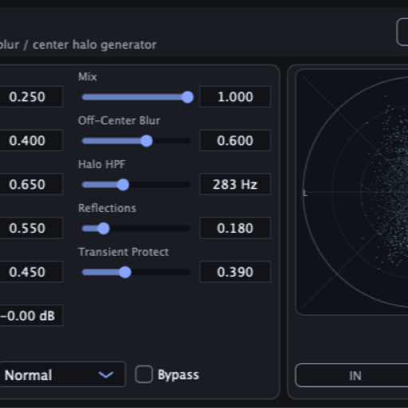
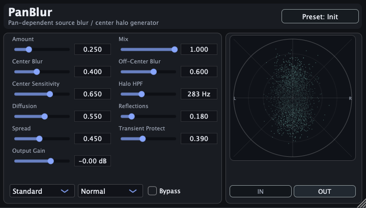

Released — Version 1.3.0.
Free Mono-to-Stereo Spatial Enhancer
PanBlur turns dry mono sources into intimate, ASMR-like stereo images while keeping the source position stable. It softens hard point-source panning and adds a clearer Air texture to the generated halo, without moving the dry source position.
The latest release is v1.3.0, which makes the Air effect easier to hear while keeping the dry source position stable. macOS and Windows VST3 downloads are available from this page.

Give a mono source an ASMR-like stereo presence while keeping its core position clear.
Treat multiple tracks together instead of managing one insert per source.
Add movement and texture to the halo while keeping the dry image and source position stable.
Version 1.3.0 makes the Air effect easier to hear. The surrounding halo can feel more alive and textured, while the dry source remains anchored at its original pan position.
The new Air parameter gives the generated halo a very subtle sense of motion. The dry source stays fixed, while only the surrounding blur texture gently changes, avoiding obvious chorus-like modulation.
This can help close-miked stereo sources, such as classical guitar, feel a little more alive without shifting the apparent source position or adding an obvious reverb tail.
Makes the Air effect easier to hear while keeping the dry source position stable.
Improves mono-to-stereo behavior, including bypass handling in supported hosts.
Adds the new Air parameter for subtle halo texture movement without moving the dry source position.
PanBlur_1.3.0.pkgPanBlur-windows-vst3.zipEmail: kjdevapphelp@gmail.com
Please include: OS version, host app version, and a short description of the issue.